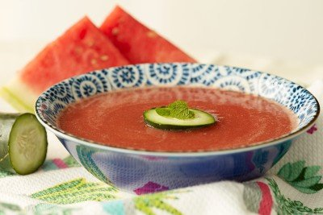

This twist on classic gazpacho will be a welcome, refreshing sight on those hot summer days!
Ingredients
- 4 cups cubed seeded watermelon
- 2 roma (plum) tomatoes, seeded and chopped
- 1 red bell pepper, chopped
- 1/2 English (seedless) cucumber-peeled, seeded, and cubed
- 2 tablespoons minced shallot
- 2 tablespoons fresh lime juice
- 1 tablespoon apple cider vinegar
- 1 1/2 teaspoons alt, or to taste
- 1/4 teaspoon freshly ground black pepper
- 2 tablespoons crumbled feta cheese
- 2 tablespoons minced fresh cilantro
Directions
- Combine watermelon, tomatoes, red pepper, cucumber, shallot, lime juice, vinegar, salt, and pepper in a high-powered blender. Blend until smooth, 20 to 30 seconds. Refrigerate for at least 1 hour to allow flavors to meld and soup to chill
- Stir gazpacho before serving, as it has a tendency to separate, and divide between 4 bowls. Top with feta cheese and cilantro. Enjoy!